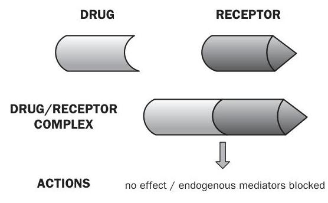
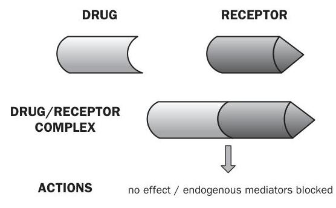

Pharmacodynamics and pharmacokinetics
Introduction
Part of the nurse's role, alongside the pharmacist, is the need to ensure that medicines are administered appropriately. That is why it is essential that the nurse has a good knowledge and understanding of pharmacology and the relevant calculations in terms of patient care. Pharmacology is the study of drugs (chemicals) and their interactions with the body. The term is derived from the Greek pharmakon which can mean both 'remedy' and 'poison'. In modern medical practice we use drugs more and more to treat and manage disease, so it is vital that nurses understand the basic mechanisms of drug action and reaction.
The aim of this chapter is to introduce the basic principles of pharmacology in relation to nursing practice. The chapter will give you an appreciation of pharmacodynamics and pharmacokinetics. It will identify the main targets for drug action and allow you to develop an understanding of drug absorption, distribution, metabolism and excretion.
Put simply:
- pharmacodynamics is the effect that drugs have on the body; while
- pharmacokinetics is the study of the way in which drugs move through the body during absorption, distribution, metabolism and excretion.
For drugs to produce their effects they must interact with the body. This can happen in many ways and depends on the properties of the drug, and will be discussed later in this chapter. Pharmacokinetics influences decisions over the route of administration. The processes that occur after drug administration can be broken down into four distinct areas (known as ADME):
- A Absorption of the drug
- D Distribution of the drug molecules
- M Metabolism of the parent drug
- E Excretion or elimination of the drug and its metabolites
Absorption
Before a drug can begin to exert any effect on the body it has to be absorbed into the body systems. This absorption process can be affected by many things but the main factor relating to absorption is the route of administration (see Box 1.1).
It is important that nurses understand the implications attached to choosing routes of administration of drugs based on their absorption. Many patients may need to have their medication administration tailored to their particular medical condition or the medication which they are prescribed, and this is an important factor to consider as it can impact on the patient's ability or desire to take their medication.
Other factors controlling the rate and reliability of drug absorption can be said to be physiological or physico-chemical.
Physiological factors
Physiological factors relate to human physiological functions:
- Blood flow to absorbing site. The better the blood supply to the area the greater the rate of absorption. Therefore if a person has a good circulation they will have the ability to absorb the drug well.
- Total surface area for absorption. The greater the surface area the greater the rate of absorption. The intestine has a very large surface area, making it an ideal target for drug absorption. This is why you will find that most drugs are given orally where possible.
- Time of arrival and contact time at absorption site. The longer the drug is in contact with the absorbing surface the greater the rate of absorption. This is why if a person is suffering from diarrhoea the chances of a drug given orally being absorbed completely are lowered and other means of administration must be considered.
Physico-chemical factors
Physico-chemical factors relate to the chemical make-up of the drug in relation to human physiological function:
- Solubility. How soluble is the drug in body fluids? As the body is made up of a large amount of water, drugs can dissolve readily. However, certain drugs do not dissolve into small enough particles to ensure rapid absorption.
- Chemical stability. Will it break down readily?
- Lipid to water partition coefficient. Is it more fat soluble than water soluble? This is an important area to consider. As your cells are made up of a phospho-lipid layer, any drug that can dissolve well in lipids will pass through your tissues far more rapidly. Examples of drugs that are highly lipid soluble are anaesthetic agents and benzodiazepines.
- Degree of ionization. Some drugs are weak acids and weak bases (alkalis). These drugs tend to disassociate when given to a person. This means that some of the drug remains active and some is inactive. Often this depends on the pH of the solution (i.e. its acidity or alkalinity) in which the drug is being dissolved. For example, a weak acid does not disassociate as much if dissolved in an acid environment. This means that the drug can cross membranes in a more active form than if it had been dissolved in a neutral or base solution.
| ROUTE | ADVANTAGES | DISADVANTAGES |
|---|---|---|
| ENTERAL ROUTES | ||
| ORAL | Convenient, non-sterile, good absorption for most drugs | Gastrointestinal (GI) irritation, potential for interactions, first pass destruction, inactivated by acids, variable absorption |
| SUBLINGUAL/BUCCAL | Avoids first pass (see p. 9), avoids gastric acid | Few preparations suitable |
| RECTAL | Avoids first pass, avoids gastric acid | Less dignified for the patient |
| PARENTERAL (refers to IV, IM and SC) ROUTES | ||
| INTRAVENOUS (IV) | Rapid action, complete availability | Increased drug levels to heart, must be sterile, risk of sepsis and embolism |
| INTRAMUSCULAR (IM) | Rapid absorption | Painful, risk of tissue damage |
| SUBCUTANEOUS (SC) | Good for slower absorption | Absorption variable |
| INHALED (LUNGS) | Large absorption area, good for topical use | Few disadvantages |
| Other routes include intra-arterial, intrasternal, intrathecal, intra-articular, intraperitoneal, intraventricular, nasal, bronchial, vaginal, skin and conjunctiva | ||
Distribution
Once drugs have been administered and absorbed, they have to be distributed to their site of action. For some drugs that site is known and such drugs are available to give locally or topically. All other drugs need to be distributed throughout the body.
There are four main elements to this:
- Distribution into body fluids. These are mainly plasma, interstitial fluid and intracellular fluid. Molecular targets for drugs are found in these areas.
- Uptake into body tissues/organs. Specific tissues take up some drugs - for example, iodine and thyroid gland.
- Extent of plasma protein binding. Plasma proteins such as albumin can bind drug molecules. This varies widely among drugs. Drugs bound to plasma proteins are pharmacologically inert; only free drugs are active. Some drugs do not bind (e.g. caffeine) and some are highly bound (e.g. warfarin which is 99 per cent bound to plasma proteins). Some drugs can displace others from their binding sites on the plasma proteins - for example, phenylbutazone can displace warfarin from plasma proteins. This is an important consideration for drugs which have this effect.
- Passage through barriers. The two main examples are the placenta and the blood-brain barrier (BBB). Drugs must be highly lipid soluble to pass across these barriers. If not, they may not be able to reach their site of action.
The factors which affect drug distribution are taken into consideration by drug companies when developing and formulating medications. While these factors are of interest, the nurse's role in monitoring drug distribution is mainly in monitoring the onset of the effect of, or the response to, the medication. If analgesia is given and the patient reports reduced or relieved pain, the drug has been distributed to its target site.
Biotransformation
Biotransformation of drugs is the process of metabolizing the parent drug compound and occurs mainly in the liver (hence the term hepatic metabolism) to different compounds called metabolites. The drug metabolite may have decreased, increased or undergone no change in pharmacological activity compared to the parent drug. It may also have a different activity. Some drugs are what are termed pro-drugs - that is the drug itself is pharmacologically inactive until it is metabolized by the liver to its active form. A good example is codeine, which is metabolized to morphine by the body. The metabolite is more polar (i.e. chemically charged) than the parent drug and therefore is more readily excreted by the kidney. Drug metabolism can influence dose and frequency of dosing. Drugs which are metabolized quickly have a short duration of action and need to be administered more often (two, three or four times daily). Drugs which are metabolized slowly can have a longer duration of action and may only need to be given on a once-daily basis.
Hepatic metabolism
The terms shown in Table 1.1 are different chemical reactions that change the properties of drugs to facilitate their removal from the body by excretion. Most drugs undergo phase I oxidation followed by phase II conjugation.
| Phase | Process |
|---|---|
| Phase I metabolism | Oxidation |
| Reduction | |
| Hydrolysis | |
| Phase II metabolism | Conjugation |
Excretion
Once drugs have had their desired effect they need to be excreted by the body. Principles of excretion include renal elimination and clearance, secretion into bile for faecal elimination and entero-hepatic recirculation. As previously outlined, some drug metabolites can also have pharmacological effects. If these compounds were not eliminated, they would accumulate in the bloodstream and could cause toxic and unwanted effects.
The main method of renal elimination is by active glomerular filtration. This is where ionized drugs are actively secreted into the proximal tubule. These ionized compounds are actively excreted by the kidney and are 'pushed' out into urine. A more passive form of drug compound movement occurs in the distal tubule of the kidney. Here there is passive reabsorption and excretion of drug molecules and metabolites according to a concentration gradient. Molecules move from a high concentration to a lower concentration by diffusion. This applies to unionized compounds (drugs without charge), and prevents the entire dose of a drug being excreted at once. This helps to maintain circulating plasma levels to allow the drug effect to continue until the next dose is taken.
Excretion into bile is another method of eliminating drug molecules and metabolites. These are secreted from the liver into bile and into the gut for faecal elimination. As in renal excretion, not all of the drug and its metabolites are eliminated entirely at once. Some drugs undergo enterohepatic recirculation. This is where some of the drug is reabsorbed from the gut, back into the bloodstream and represented to the liver for further metabolism. This can help to maintain circulating levels of active molecules to prolong drug effect until the next dose. An important example of a drug that undergoes this is the combined oral contraceptive pill.
General and molecular aspects
It is important that nurses involved in medicines management are aware of the sites of action for many commonly used drugs. Drugs exert their effects at molecular (chemical) targets, of which there are many. Below are some of the commonest.
Receptors
The plasma membrane of a human cell is selectively permeable in that it helps control what moves in and out of the cell. The cell membrane consists of a thin structured bilayer of phospholipids and protein molecules. The surfaces of plasma membranes are generally studded with proteins that perform different functions, like the reception of nutrients. In biochemistry these protein molecules are referred to as receptors. Molecules which bind to these receptors are called ligands. Examples of ligands are neurotransmitters, hormones or drugs.
A large number of drugs, which are clinically effective, exert their action by interaction with receptors. Examples include:
- ligand-gated ion channels (ionotropic receptors) such as the $\mathrm{GABA}_{\mathrm{A}}$ receptor, which binds benzodiazepines;
- G-protein coupled receptors such as adrenoceptors;
- kinase-linked receptors such as the insulin receptor;
- nuclear receptors such as the thyroid receptor.
Ion channels
Ion channels provide receptors which drugs can interact with. Drug actions at ion channels can take two forms (see Figure 1.1). The first form are known as channel blockers, whereby the drug blocks permeation of the channel, and the second are channel modulators whereby the drug binds to a receptor site within the ion channel and modulates permeation of the channel. This can happen by the drug altering the channel's response to its normal mediator.
Enzymes
Enzymes are biological catalysts that increase the rate of chemical reactions in the body. They are integral to many normal physiological functions. Many drugs target enzymes to prevent them from carrying out their normal function - for example, Enalopril acts on angiotensin converting enzymes, thereby preventing an increase in blood pressure.
Transport systems
These are also known as carrier molecule interactions. In some transmitter systems, there is normal physiological recycling of the transmitters, such as serotonin. After the release of serotonin from a neurone, it is taken back up by that same neurone using a serotonin-selective re-uptake system. The drug fluoxetine blocks the uptake transporter for serotonin as its mode of action. This results in an increased level of serotonin in the neuronal synapse. This mechanism has an onward effect which facilitates an increase in mood and makes fluoxetine and drugs similar to it good antidepressants.
Drug action
The time to the onset of drug action involves delivery of the drug to its site of action. This is largely controlled by:
- route of administration;
- rate of absorption;
- manner of distribution.
These are important considerations, as often we want the drug to have its effect within a certain time frame. We can speed up the time to the onset of drug action in many ways. If the drug is given orally, we can use liquid or dispersible formulations instead of regular tablets. If drug action is needed more quickly, we can use the intramuscular (IM) or intravenous (IV) route as necessary. For example, if a patient requires pain relief following myocardial infarction they would be given intravenous morphine rather than an oral preparation.
It is also possible to delay drug onset or prolong the effect by using enteric-coated or slow release preparations orally, or by using transdermal or subcutaneous (SC) routes. For example, people suffering with chronic pain from conditions such as rheumatoid arthritis may be given analgesia in the form of a transdermal patch. This is much preferred by the patient as it decreases the amount of oral analgesia required.
The duration of drug effect relates to the time it takes for the drug to be removed from its site of action. This is largely controlled by:
- rate of hepatic metabolism;
- rate of renal excretion.
It is important to be aware of the duration a drug will have its effect for. Drug companies do extensive studies to determine this information. They use the data they obtain to decide upon dosing schedules. It is vital that nurses know the normal dosing schedules for the drugs they are administering (this can easily be found in the British National Formulary - BNF) so that the correct regimen is implemented. Drugs need to be given more than once to have continued effect. Some drugs need to be given daily, while others need to be given two, three or four times per day to maintain effective action.
First pass metabolism
Some drugs undergo destruction by first pass metabolism. When absorbed through the stomach after oral administration, the drugs enter blood vessels which go directly to the liver. We call this the portal circulation. This means that drugs which are largely destroyed by liver enzyme systems will not enter the general systemic circulation. An example of such a drug is glyceryl trinitrate (GTN) which is metabolized completely by the liver at this stage. This is why you will find GTN being given via routes other than orally.
The concept of affinity
Drugs have what is termed an affinity for their receptors, or chemical targets. This is a measure of how well a drug can bind to its chemical target. The tighter the bond, the better the drug action. Some drugs have a higher affinity for their chemical targets than others. Those with a higher affinity will bind first, in preference to any other drug molecule present. Some drugs have a higher affinity for their targets than even the normal physiological molecule. This can be very useful in drug action, especially where the normal molecule is abundant and causing the problem or symptom the patient is experiencing. Higher affinity means that even small amounts of the drug will bind preferentially.
Agonistic and antagonistic drug action
Drugs can either be agonists or antagonists at their target sites. This is best explained using receptors as an example (see Figure 1.2). When agonists or antagonists bind to receptors they are said to occupy the receptor site. The amount of drug occupying the receptor site relates to the magnitude of response to the drug itself. In simple terms the more of an agonist drug occupying a receptor, the greater the response.
 

Agonists are drugs that bind to their targets and form a drug-receptor complex. Agonists activate the receptors to produce a response (known as full agonists) and have what is termed positive efficacy. Antagonists are drugs that bind to their targets and form a drug receptor complex, but without causing activation or response. They can block the receptor to its endogenous activator, thereby blocking normal function. They have what is termed zero efficacy. Receptor occupancy by antagonists is important if the drug is a competitive antagonist i.e. it competes for occupancy with another drug or with the receptor's normal mediator. The amount of drug occupying will determine any response.
This is a simplistic view of the concepts of agonism and antagonism as the response of a drug at its chemical target is actually graded.
For agonists we have:
- Partial agonists: drugs that bind to their targets and activate them to produce a response which is less than that we would expect from a full agonist. They have what is termed partial efficacy.
- Inverse agonists: drugs that bind to their targets and can reduce the normal activity of that chemical target. They have what is termed negative efficacy.
For antagonists we have:
- Competitive antagonists: drugs that bind to the chemical targets and prevent activation by the normal target agent.
- Non-competitive antagonists: drugs that do not necessarily bind to the chemical target but at a point in the chain of events block target activation.
Drug specificity
Very few drugs are specific for their intended targets within the body. A prescriber will give a drug with a specific action in mind, for example salbutamol. Salbutamol is a beta2adrenoceptor agonist. This means it has its main action at beta2adrenoceptors in the bronchi. This gives us its desired effect as a bronchodilator which eases breathing in asthma. However the action of salbutamol is not that specific and can act on other beta2adrenoceptors in the body as well as on beta adrenoceptors, especially if given in higher doses leading to increased receptor occupancy. This is the reason that some of the side-effects of drugs can be seen. In the case of salbutamol, action at other beta adrenoceptors can lead to palpitations and increased occupancy at non-bronchial beta adrenoceptors can cause tremor.
Case studies
Case Study 1
Mrs Asamoah is a 72-year-old woman who has been admitted to the medical unit following a general deterioration in her mobility and ability to carry out most of the activities of living independently. She has suffered from rheumatoid arthritis for many years and takes cocodamol with moderate effect. On admission she looks pale, lethargic and is complaining of pain in her knees and hands. She informs you that she has also been taking Atenolol 50 milligrams (mg) daily for the past five years.
Following a discussion with her daughter, you learn that she has recently commenced a course of trimethoprim to treat a urinary tract infection but has been reluctant to take it as she claims that she has too many tablets to take and they tend to get stuck when swallowing.
- What information from Mrs Asamoah's assessment could you now obtain which would help you identify factors influencing the absorption and distribution of the medication she is taking?
Case Study 2
Mr Mambety is a 42-year-old man who is recovering from emergency gastric surgery. He has a history of heavy drinking and cigarette smoking. His post-operative pain is being controlled by a patient-controlled analgesic device and he is beginning to mobilize with assistance.
- What factors may influence Mr Mambety's ability to metabolize and excrete any drugs he is prescribed during his post-operative recovery?
Multiple choice questions
Try answering these multiple choice questions to test what you have learned from reading this chapter. You can check your answers on page 227.
-
1 A drug that binds to a cell receptor and affects a response is called
a) An agonist
b) An antagonist
c) A receptor blocker
d) A channel blocker -
2 Most drugs and metabolites are excreted by
a) The kidneys
b) The lungs
c) Bile
d) Saliva -
3 The four processes in pharmacokinetics are
a) Stomach, liver, kidney and lungs
b) Receptors, ion channels, transport systems and enzymes
c) Administration, absorption, metabolism and elimination
d) Absorption, distribution, metabolism and excretion -
4 Pharmacodynamics is defined as
a) The effect our body has on drugs
b) The action of the liver on drug molecules
c) The effect a drug has on our bodies
d) The movement of a drug around the body -
5 The main method of renal elimination of a drug is by
a) Passive distal excretion
b) Active glomerular filtration
c) Selective reabsorption
d) Active secretion into the collecting duct -
6 How many phases of hepatic metabolism are there?
a) 1
b) 2
c) 4
d) 10 -
7 What route should drugs subject to first pass metabolism not be given by?
a) IV
b) IM
c) Sublingual
d) Oral -
8 Which of the following is a plasma protein?
a) Prostacyclin
b) Albumin
c) Protamine
d) Meatamine -
9 A pro-drug is
a) A drug given to promote growth
b) A drug given in its active form
c) A drug given to prevent metabolism of another drug
d) A drug given in its inactive form, requiring metabolism -
10 An antagonist can be
a) Competitive and non-competitive
b) Competitive and complimentary
c) Competitive and comparative
d) Competitive and conjugated
Recommended further reading
- Beckwith, S. and Franklin, P. (2007) Oxford Handbook of Nurse Prescribing. Oxford: Oxford University Press.
- Brenner, G.M. and Stevens, C.W. (2006) Pharmacology, 2nd edn. Philadelphia, PA: Saunders Elsevier.
- Clayton, B.D. (2009) Basic Pharmacology for Nurses, 15th edn. St Louis, MO: Mosby Elsevier.
- Downie, G., Mackenzie, J. and Williams, A. (2007) Pharmacology and Medicines Management for Nurses, 4th edn. Edinburgh: Churchill Livingstone.
- Karch, A.M. (2008) Focus on Nursing Pharmacology, 4th edn. Philadelphia, PA: Lippincott Williams & Wilkins.
- Simonson, T., Aarbakke, J., Kay, I., Coleman, I., Sinnott, P. and Lyssa, R. (2006) Illustrated Pharmacology for Nurses. London: Hodder Arnold.
- Trounce, J. (2000) Clinical Pharmacology for Nurses, 16th edn. New York: Churchill Livingstone.